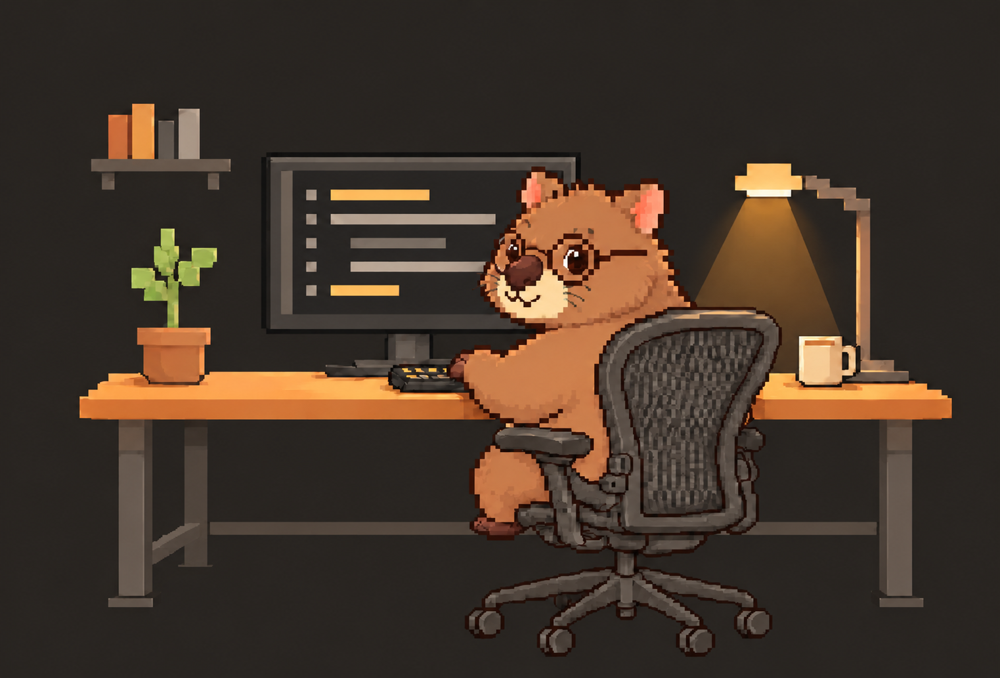
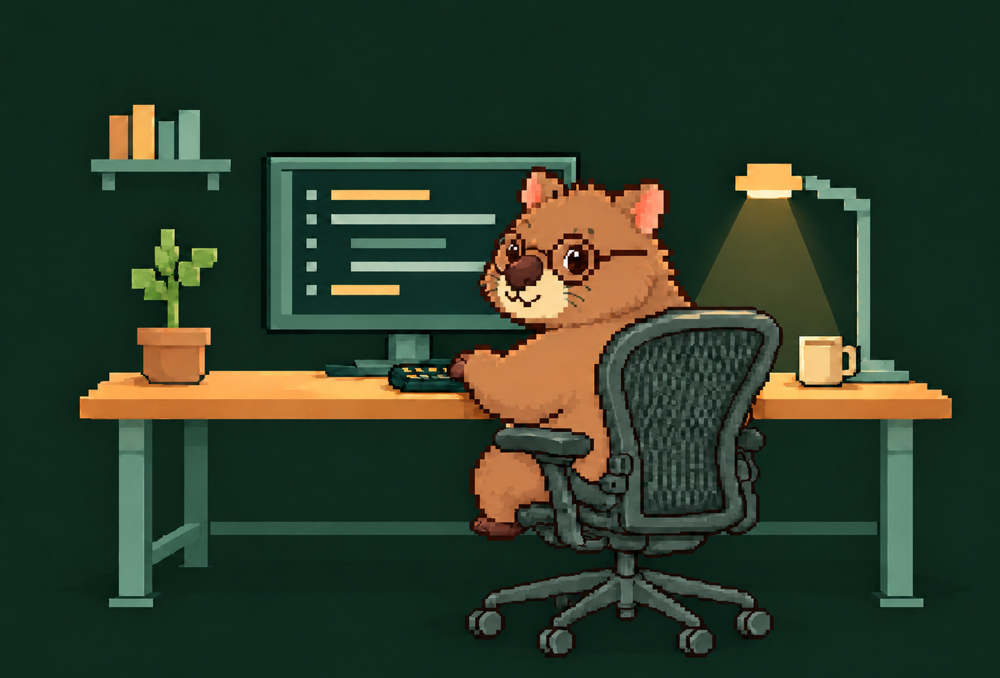
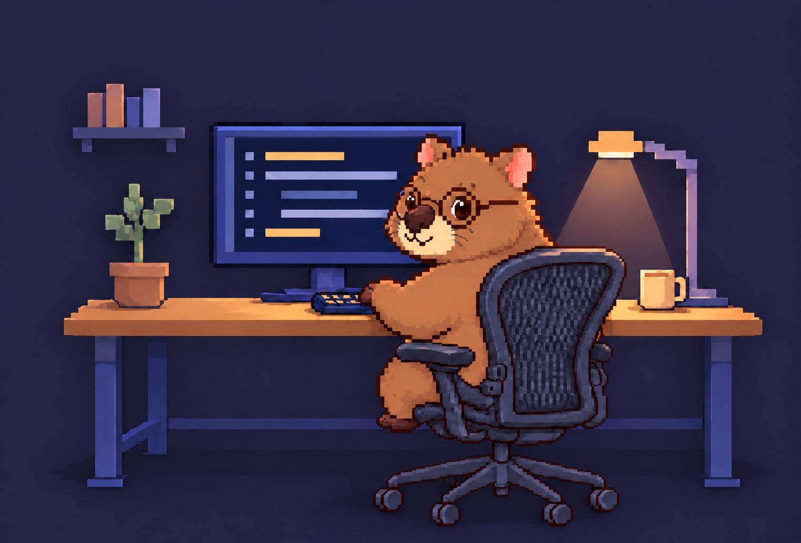
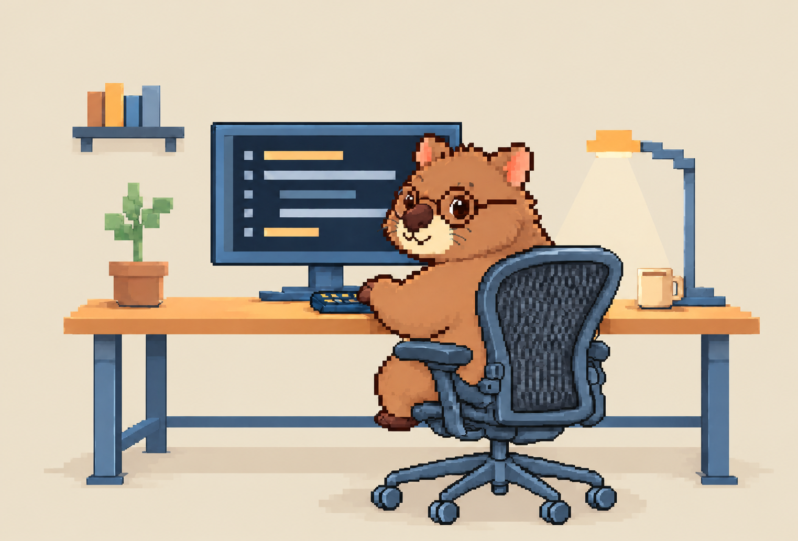
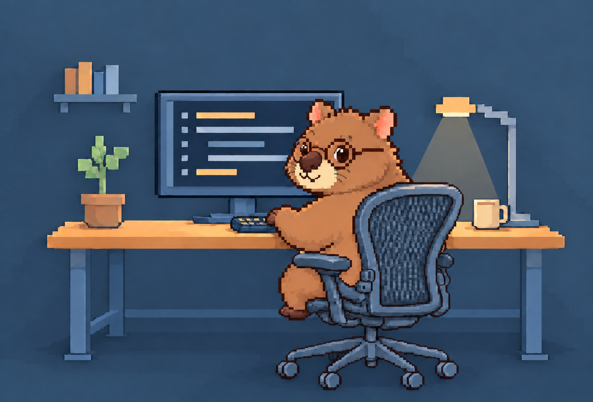

01웜 차콜
따뜻한 차콜 톤으로 차분하고 아늑한 분위기.
WOMBAT WORKSPACE / PALETTE / 01–05
같은 구도에서 배경과 색감에 따른 분위기를 비교해 보세요. 이미지를 누르면 원본을 새 탭에서 볼 수 있습니다.
기준 시안 v6 원본 보기 (새 탭)
따뜻한 차콜 톤으로 차분하고 아늑한 분위기.

짙은 숲빛으로 깊이 있고 편안한 분위기.

부드러운 남보라 톤으로 고요한 저녁 분위기.

밝은 모래색과 크림 톤으로 포근하고 산뜻한 분위기.

회색이 감도는 푸른 톤으로 담백하고 정돈된 분위기.